In this project we were challenged with coming up with a new way and creative way to unlock a mobile phone.
Our team came up with a touch based solution, the guitar unlock, and a sensory based solution, the falling bird unlock.
Multi-touch Guitar unlock
For our innovative multi-touch unlocking system, we embarked on a journey of ideation, exploring a multitude of intriguing concepts. Among these, "Cosmic Alignment" emerged, envisioning users interacting with celestial entities akin to planets for phone access. Another concept, "Composition Unlock," entailed crafting a unique musical composition that, when performed correctly, would grant device entry. Lastly, the "Zodiac Unlock" required users to input a constellation sign corresponding to their chosen symbol for unlocking.
After extensive deliberation and the creation of initial sketches for each idea, it became apparent that the Composition Unlock not only stood as a unique approach but also promised an engaging user experience. As we transitioned from concept to implementation, our focus shifted towards refining the user interface, departing from the conventional guitar-like design to elevate the overall interaction.
Upon a sagacious suggestion from our professor, we integrated a musical element, enriching user interaction with harmonious notes upon key activation. While Heer led the charge in design and conceptualization, Kai took the helm in crafting the user interface and ensuring seamless functionality on both the front-end and back-end using HTML, CSS, and Javascript. Simultaneously, Logan integrated the musical effects into the website, guaranteeing flawless operation of the entire system.
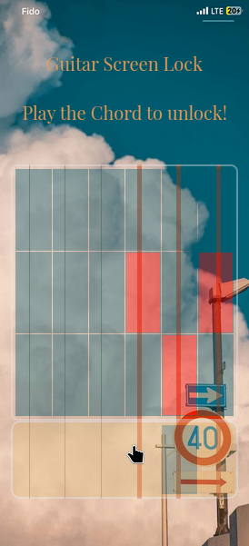
Sensory-based bird fall
Logan pioneered the sensory-based unlocking method, introducing innovative concepts such as the shake pattern, where users move the phone in a specific pattern to interact with the screen and unlock the device. Another inventive idea involved using vocal cues, where users could hum a tune, and the device would unlock once the correct melody was sung. As the implementation evolved, remarkable concepts emerged, including the angle unlock, which required physically manipulating the phone to reach a specific angle for unlocking. Another concept was the ladder, where a ball navigated between rungs, ultimately landing on the correct one to unlock the device. Ted endorsed this implementation, recognizing its potential.
Throughout the iterations, notable improvements were made, notably refining the locking mechanism to incorporate a tile-based approach rather than simply reaching the end, enhancing overall security. Additionally, meticulous attention was paid to the user interface. Ted authored the Unity script for the unlock screen, augmenting it with various illustrations to enhance the website's visual appeal.
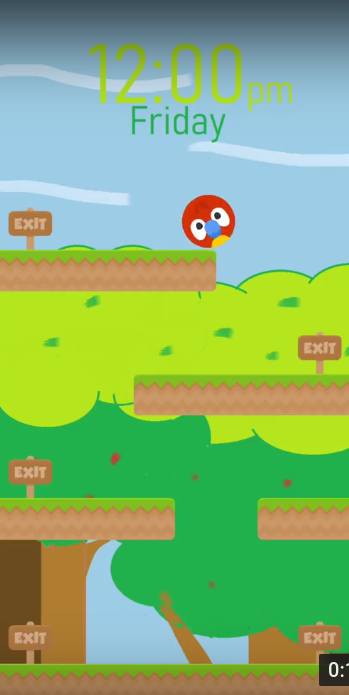
Multi Touch Unlock Ideation
-
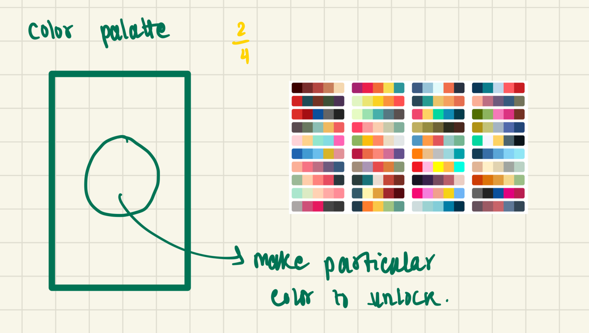
This multi-touch unlock system necessitates users to blend their chosen unlock color, and if the resultant mixture aligns with the preset color, the phone will unlock. While this design for multi-touch demonstrates a clever concept, it garnered only two out of four votes in favor during the proposal phase. The majority of members expressed reservations about its viability as a final choice, citing potential difficulty for users to consistently reproduce the exact color and a belief that other ideas might offer greater creativity.
-
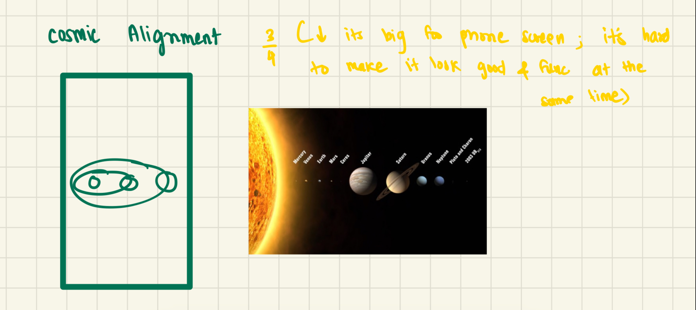
For this multi-touch unlocking system, users would need to align all the planets in the correct sequence for the phone to unlock. This concept initially appeared quite innovative, promising an engaging user experience. However, it faced a couple of significant drawbacks. Firstly, representing the entire solar system on a mobile screen posed a challenge. If only a few parts of the system were visible at a time, it would diminish the overall user experience. Additionally, creating a visually appealing and enjoyable interface presented another difficulty. In the proposal stage, only three out of the four members supported this idea.
-
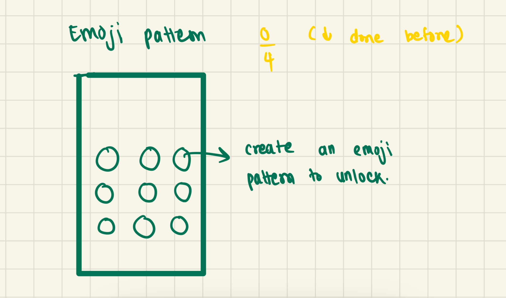
The multi-touch unlock system employs an emoji pattern, allowing users to select and input a specific sequence of emojis to access their phone. The user sets their own unique pattern. Initially, this design received a score of 0 out of 4 in the design proposal phase due to its perceived simplicity.
-
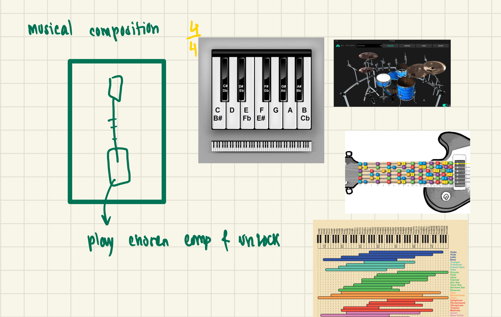
This multi-touch unlocking system enables users to input the correct combination, and once it's successfully entered, the phone unlocks. Originally, these concepts, as depicted in the diagrams, were envisioned to be executed using a keyboard, guitar, or drums. The majority of members were highly enthusiastic about this concept, as it not only presented a unique approach but also offered numerous opportunities for enhancements and additional features to make the lock more enticing.
-
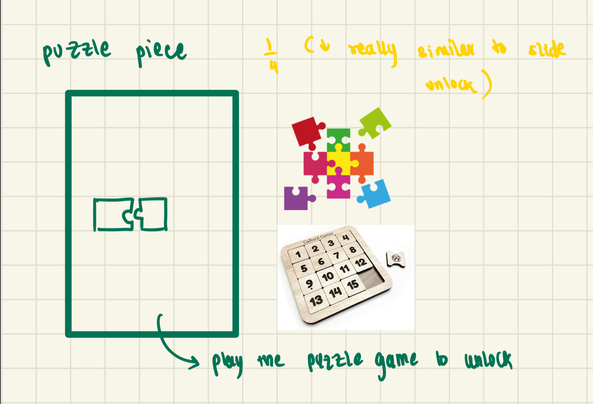
The multi-touch unlocking system utilized puzzle pieces, requiring them to be arranged in a specific sequence for the phone to unlock. This sequence could involve solving a jigsaw puzzle or organizing numbers in the correct order by sliding them one at a time. Unfortunately, only one out of four team members endorsed this concept. One of the drawbacks of this unlocking method was its resemblance to the familiar 'slide to unlock' approach.
-
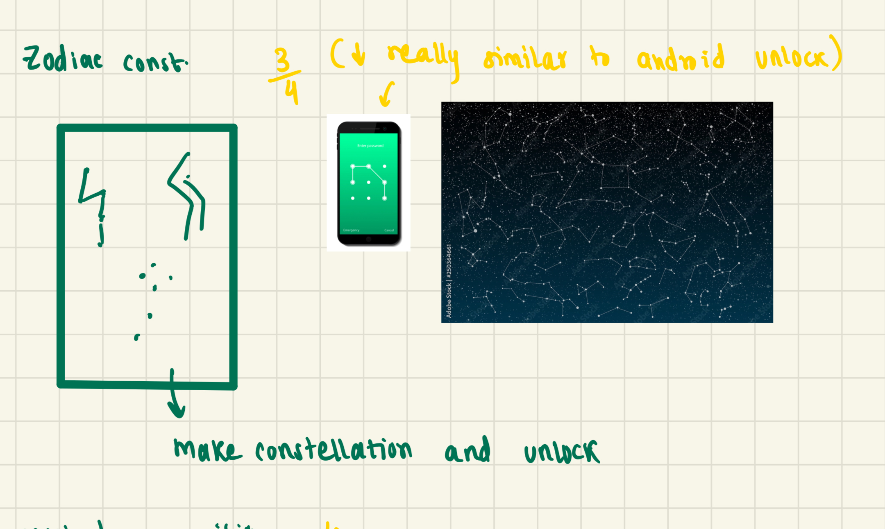
This multi-touch unlocking system draws inspiration from constellations. Users have the option to select their preferred constellation pattern to unlock the phone. To gain access, they arrange the stars of the chosen constellation. Three out of four team members endorsed this design for further development, finding it an intriguing addition. However, it was noted that one drawback was its similarity to the Android unlock method. Additionally, accommodating the extensive variety of constellations could pose a challenge.
-
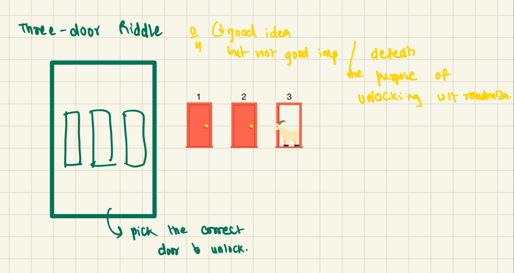
The multi-touch unlocking method, utilizing the three-door unlock approach, mirrors the Monte Carlo principle where users select a door at random to locate the goat. However, in the event they fail to identify the correct door, the game resets. While this concept holds potential, the practical execution may not yield optimal results. Moreover, relying on guesswork to find the correct door undermines the primary objective of enabling users to access their phones conveniently using their chosen unlocking method.
-
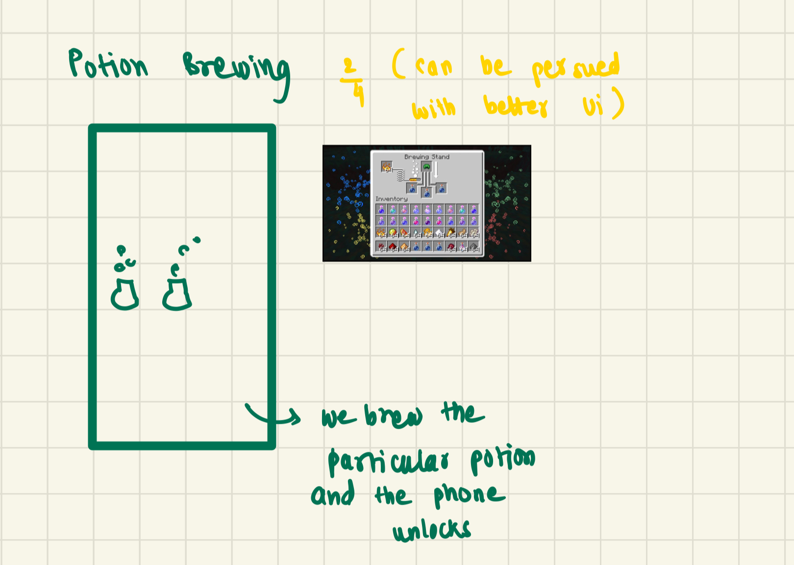
This method involves brewing a potion to unlock the phone, using a multi-touch approach. Users are given a set of basic potions and must brew the one they select as their unlocking elixir. While this concept has potential, it falls short in terms of uniqueness and simplicity. Additionally, implementing it would necessitate a significant emphasis on UI design to make up for the lack of distinctive features.
Sensory Based Unlock Ideation
-
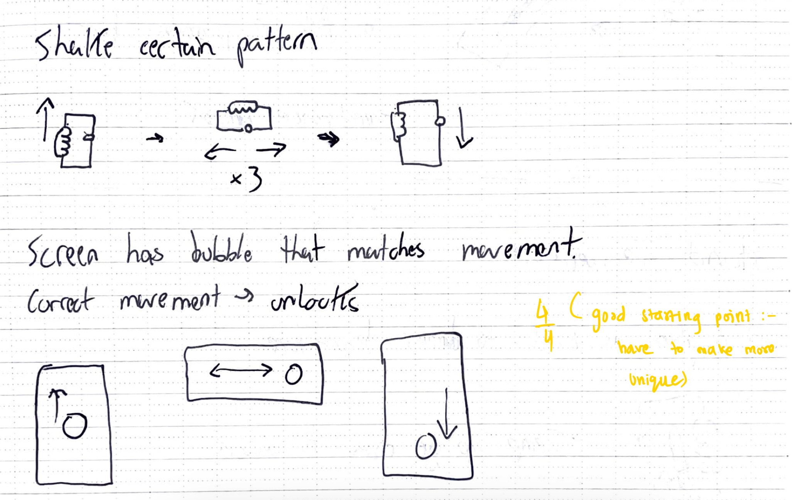
The sensory unlocking system operates by requiring specific motions with the phone to enable unlocking when the moving object reaches a designated endpoint. The majority of our group members supported this model for sensory unlocking, as it offers an innovative approach and ample room for generating creative ideas, such as golf-based or ladder-based unlocking, as envisaged in future implementations.
-
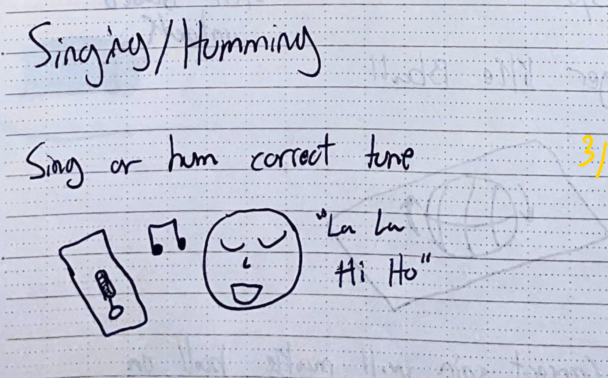
This sensory-based unlocking method requires users to hum or sing a specific tune to gain access to their devices. The tune is then recorded by the sensory device and analyzed for a match with the tune already registered in the system. This concept garnered a 75% approval rate from a sample of four individuals. However, one potential drawback to implementing this method is its perceived complexity.
-
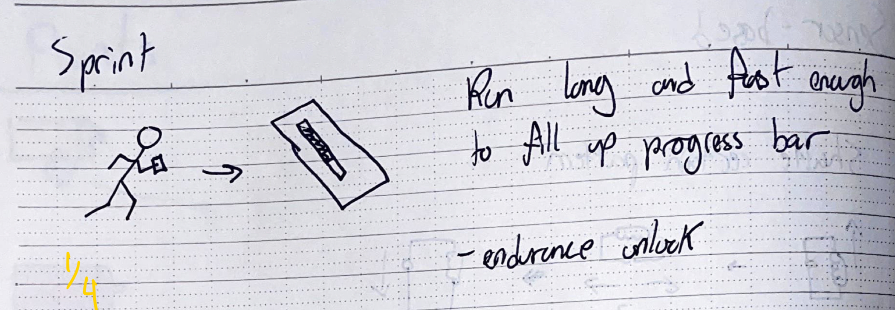
In this sensory-based unlocking method, users are required to engage in physical activity, prompting the device's meter to measure their speed. When the device registers a specific speed threshold, it triggers the phone to unlock. While one out of four team members advocated for this approach, it was ultimately not selected, partly due to its limited suitability for testing purposes.
-
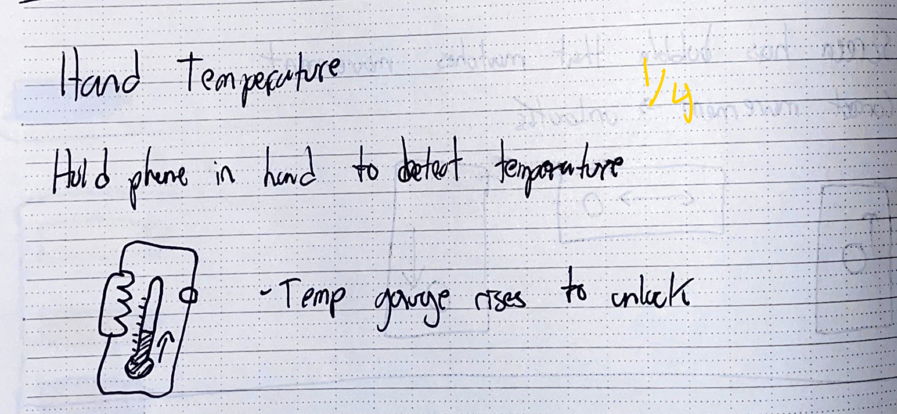
This method of sensory-based unlocking utilizes the hand's temperature to grant access to the phone. When the temperature gauge approaches the predetermined unlocking threshold, the device is activated. However, only one in four individuals supports this concept. One drawback raised is the potential difficulty in accessing a device to measure its temperature.
-
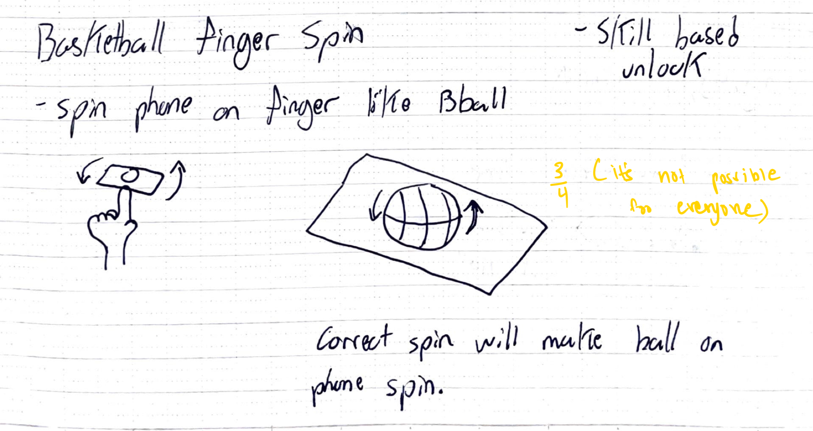
This method employs a sensory approach to unlocking the phone, wherein the user spins the device on their finger, akin to spinning a basketball. While this concept garnered a 75% approval rate, it's worth noting that despite its popularity, it may not be the most practical solution. Not every user possesses the dexterity to execute such a maneuver, potentially leading to accidents.
From the initial sketches, the best were chosen and further refined using the 10+10 method.
Multi Touch Idea Refinement
-
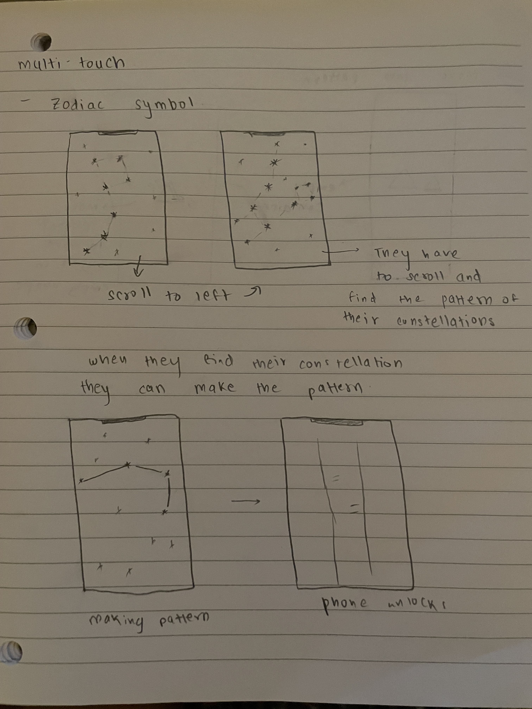
For this implementation of the zodiac symbol multi-touch unlocking method, we observe various screens. In this design, users are required to scroll across the expansive constellation and locate the precise constellation to unlock. However, one drawback of this approach is its potential size, which may make it less accessible compared to other, more innovative and adaptable ideas.
-
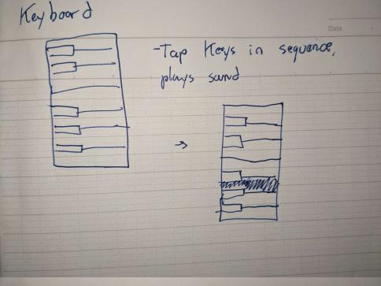
Another approach to unlocking this multi-touch composition involves a piano key setup. Users can play the designated chords on the keyboard to activate the unlocking sequence. This concept closely resembled the guitar unlocking method. Ultimately, our team opted for the guitar method because it resonated more with us in terms of interest and engagement.
-
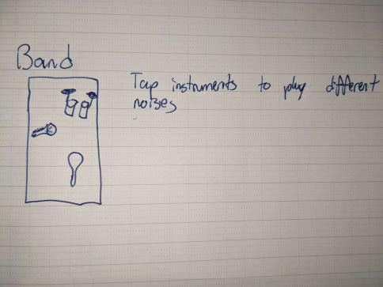
Logan's proposed multi-touch composition method, which would have allowed users to play drums and a band to unlock the phone upon successful execution, was ultimately not selected due to its complexity in implementation.
-
This method of sensory-based unlocking utilizes the hand's temperature to grant access to the phone. When the temperature gauge approaches the predetermined unlocking threshold, the device is activated. However, only one in four individuals supports this concept. One drawback raised is the potential difficulty in accessing a device to measure its temperature.
-
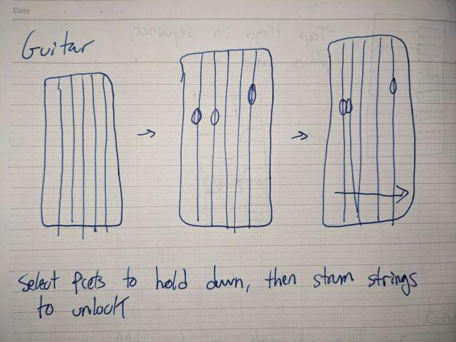
Logan's guitar composition employing a multi-touch method allows users to select keys and strum them to produce sound. This method holds great appeal, as it not only offers an enjoyable experience but also provides room for enhancements, including adding sound to the corresponding chords.
Multi Touch Idea Refinement
-
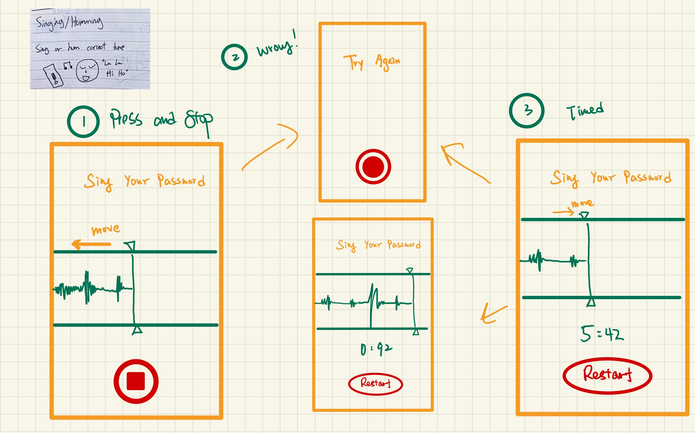
This approach employs sensory techniques such as singing and humming to unlock the device. In the depicted scenario, Kai illustrates users attempting to reproduce a specific tune set as their password. If the gathered rendition is incorrect, users receive a notification about its inaccuracy. Additionally, users have the option to specify how much of the tune they wish to record.
-
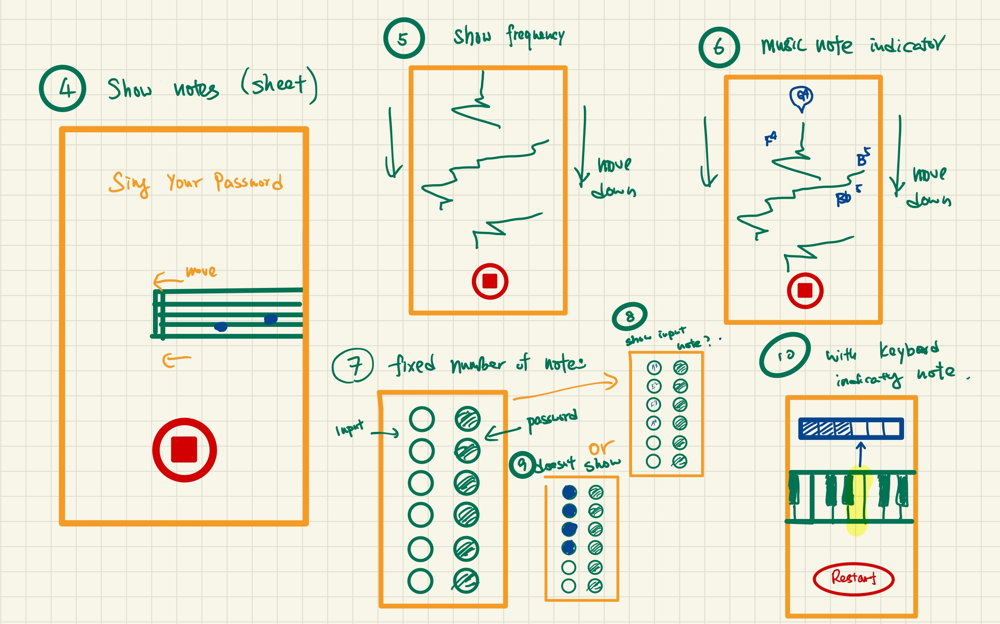
Some of the more detailed illustrations demonstrate the capability to record notes. They go even further by displaying voice frequency alongside visual representations of the musical notes. In contrast, certain depictions showcase a fixed set of notes, requiring them to be sung to access specific ones. Another option explored involved using a keyboard or a musical instrument to indicate the notes. Despite the extensive scope of possibilities, this approach was ultimately not chosen. We were particularly focused on developing the guitar unlocking method for the multi-touch system, and it may have been too complex to pursue given our limited experience with sensory applications.
-
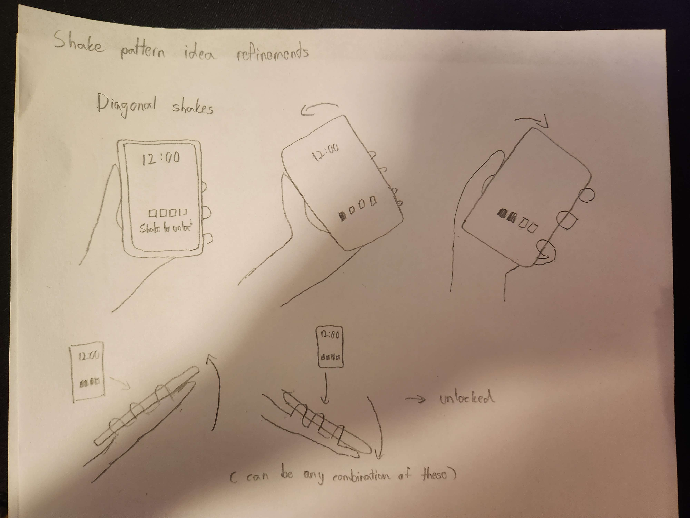
Ted developed a sensory-based phone unlocking method that relies on specific motion patterns. By moving the phone diagonally or up and down, it can be unlocked. While this approach appeared enjoyable, it didn't garner much interest for further exploration, as it seemed rather straightforward and lacked uniqueness.
-
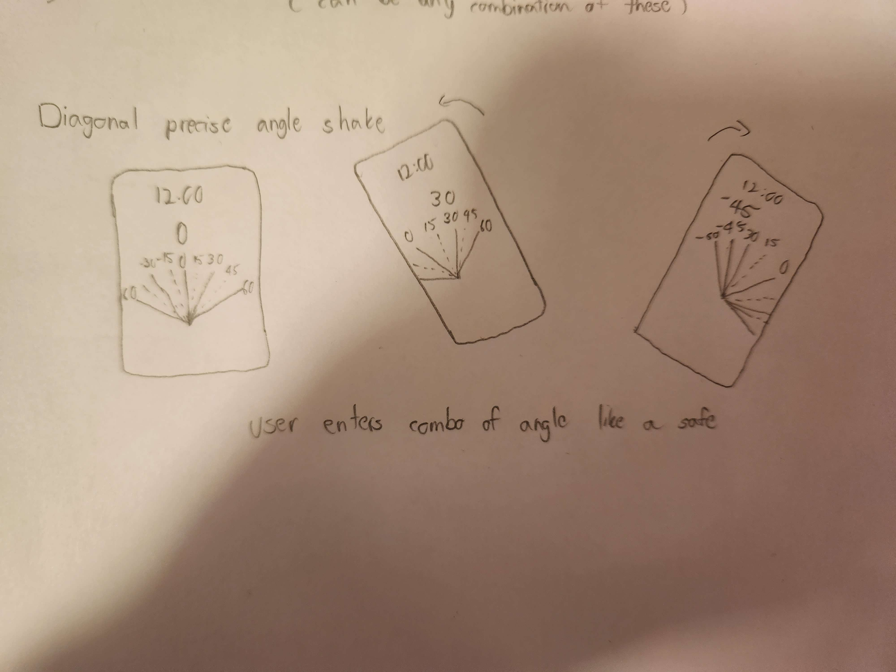
Ted developed a motion-based sensory unlocking method. In this approach, users must set the angle on their device to one that closely matches the intended unlocking angle. Once this angle is reached, the phone unlocks. While this method appears effective, it also brings to mind a similar technique used in a prior project by another group, where they employed a rotating lock for phone access.
-
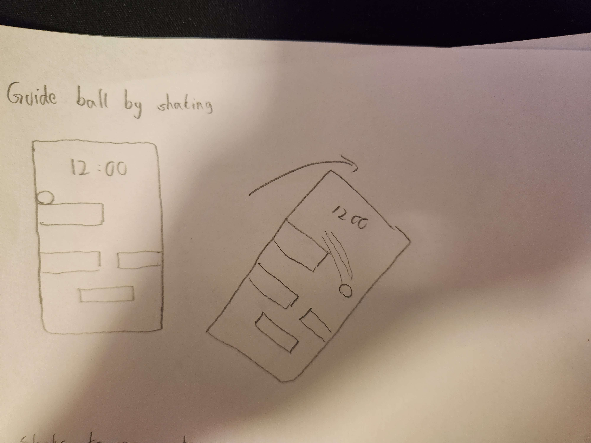
The innovative sensory motion technique devised by Ted involves gently tilting the phone from side to side, facilitating the movement of the ball from one rung to another. Eventually, it aligns perfectly with the correct rung, enabling the phone to be unlocked and accessed. This approach not only demonstrated uniqueness but also added an element of enjoyment to the process. Ultimately, our team decided that this implementation was the most effective choice.
-
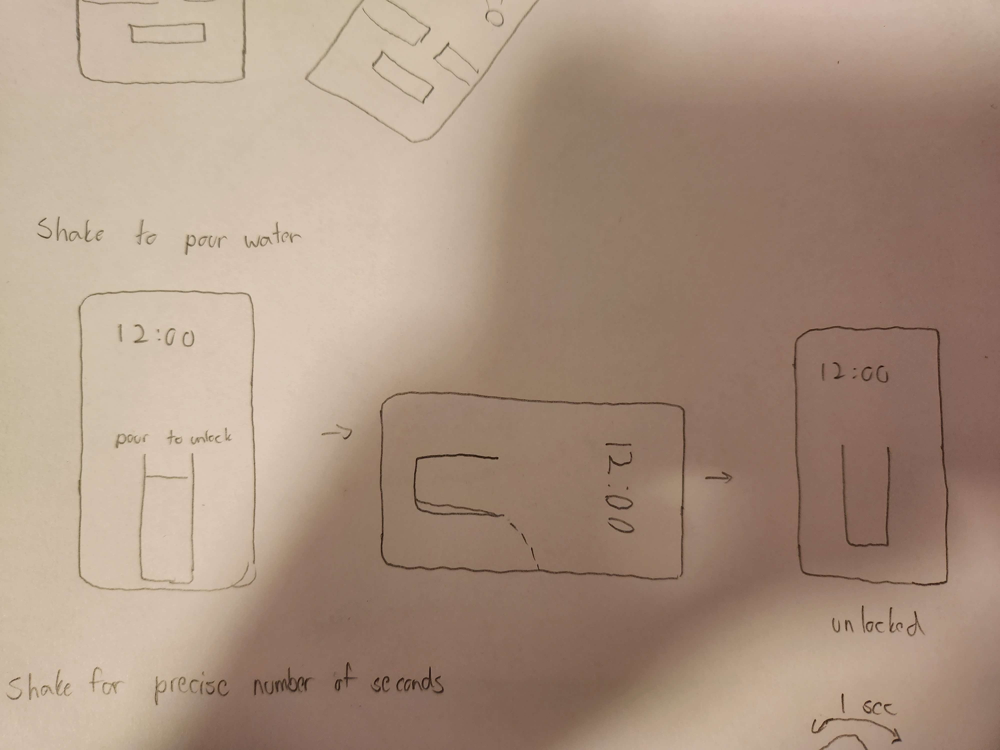
This implementation, conceived by Ted, involves a sensory response to the motion of water descending when the phone is tilted. The act of water cascading down serves as the mechanism for unlocking the phone. While this approach initially appears intriguing, it also raises concerns. It seems straightforward and potentially lacks the robust security needed for unlocking sensitive devices.
-

Ted also devised this sensory approach to unlock the phone. In this method, if the device is held at a specific angle for a designated duration in a particular pattern, the phone would unlock. While this unlocking mechanism proved effective, it appeared somewhat simplistic and lacked the distinctive and enjoyable elements present in some of our other methods.
-
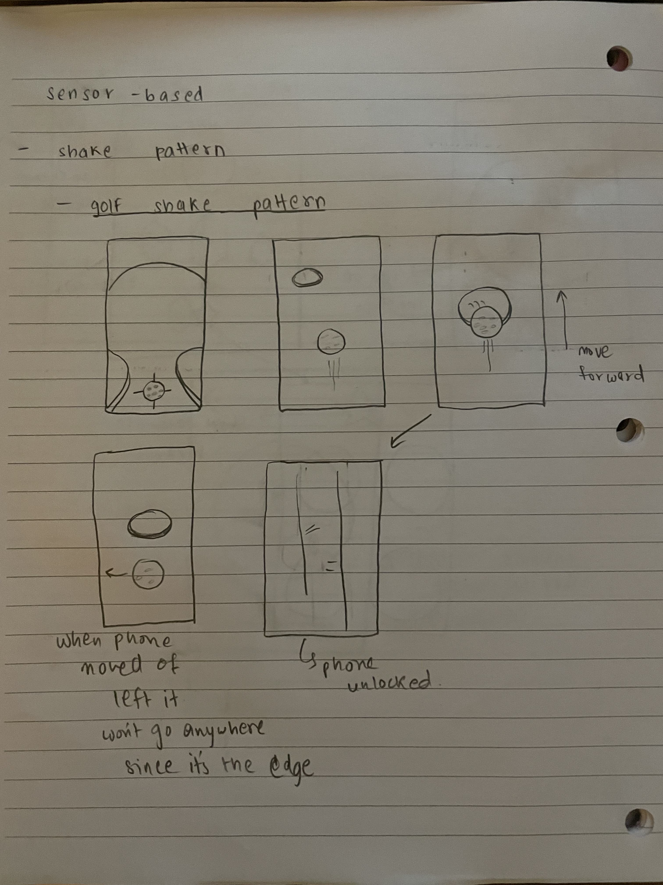
Heer devised this sensory-based approach for the shake pattern. The concept involved using a golf ball set in motion, ultimately reaching the goal and landing in the golf hole. While the idea was innovative and entertaining, its practical implementation posed significant challenges, making it less feasible for seamless execution.
-
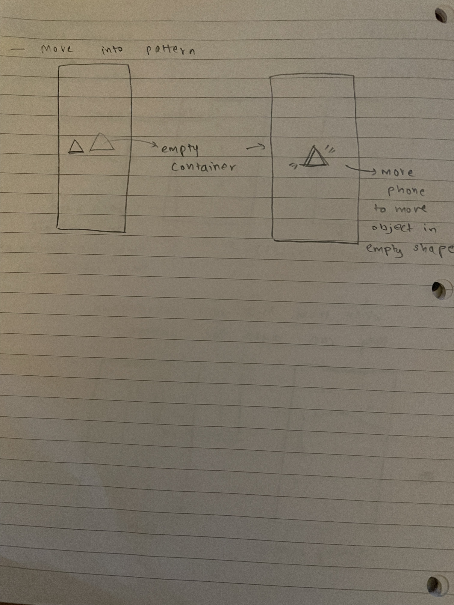
In this rendition of the shake pattern by Heer, the objective is to relocate the object to the appropriate box. While the execution was well done, it bore a resemblance to another concept and lacked a distinct uniqueness.
Clicker Game ↓
The development process for the engaging clicker button game involved evaluating and selecting the top 10 ideas out of 40.
The "Monkey Poop War" concept, though unique, was considered too complex. The "Clicker Game" stood out for its simplicity and creative potential.
Other ideas included bird-viewing, color combinations, and expression-changing applications.
The top contenders were "Monkey Poop War," "Clicker Game," "Bird Sounds," "Color Changing Game," and "Expression Changing."
Sketches for the color mixing game showed creativity but faced limitations.
The monkey poop game offered complexity but was ultimately set aside due to logistical challenges.
The bird-viewing application needed further depth.
The process highlighted the need for an idea balancing uniqueness and feasibility.
The clicker game emerged as a promising choice, with Thet's implementation adding innovative elements like a metronome and various game modes to improve hand-eye coordination and reflexes.
The resulting clicker game is designed to enhance hand-eye coordination and reflex responses in a fun and interactive manner. It offers diverse modes including 'Normal Mode' for classic clicking,
'Color Mode' for visual stimulation, and 'Animal Mode' for both entertainment and education. With these options, players can tailor their experience, ensuring hours of entertainment and skill-building.
Concept Sketches
We created a tier list of our top 40 ideas so that it is easy to rate them, our tier list ranged from (S) to (D), where (S) represents the top of the tier list and (D) represents the bottom-most tier.
This made the sorting easier, making us consider only the top 10 ideas. Following are those top 10 ideas.
-
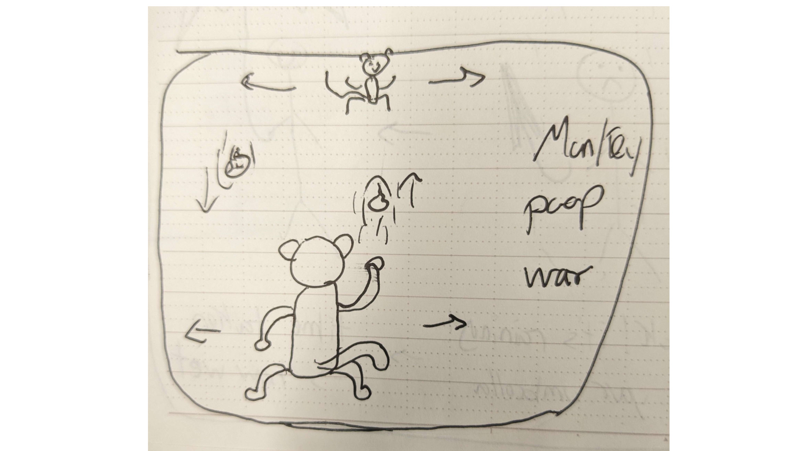
Monkey poop war was a part of our top 1 ideas, this is a game where there are two monkeys facing each other and they throw poop at each,
which consequently has to be dodged by the opposite monkey. It was made by Logan, we chose this as the best idea because not only is it unique but also it is fun and educational.
It is good for the development of hand-eye coordination. This idea was eventually not chosen to go further because it seemed a bit too complicated and maybe not as unique.
-
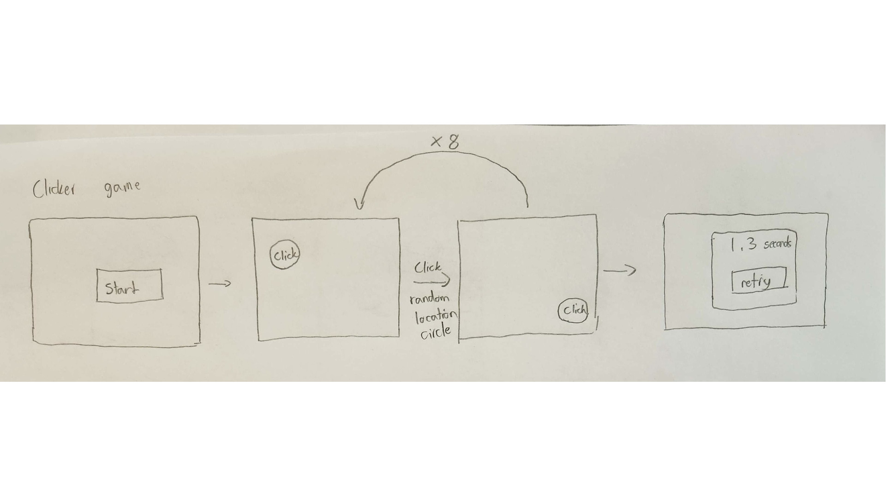
The second idea, or the first on (A) tier is a clicker game. This idea was made by Htet, some of the great features of this application are that it is quite unique and it teaches kids to work fast.
This application was also one of our priorities because it has a lot of room for more creativity since it is a very simple and basic application. The downside of this application for this project could be that it is not as interesting as some of our other ideas.
-
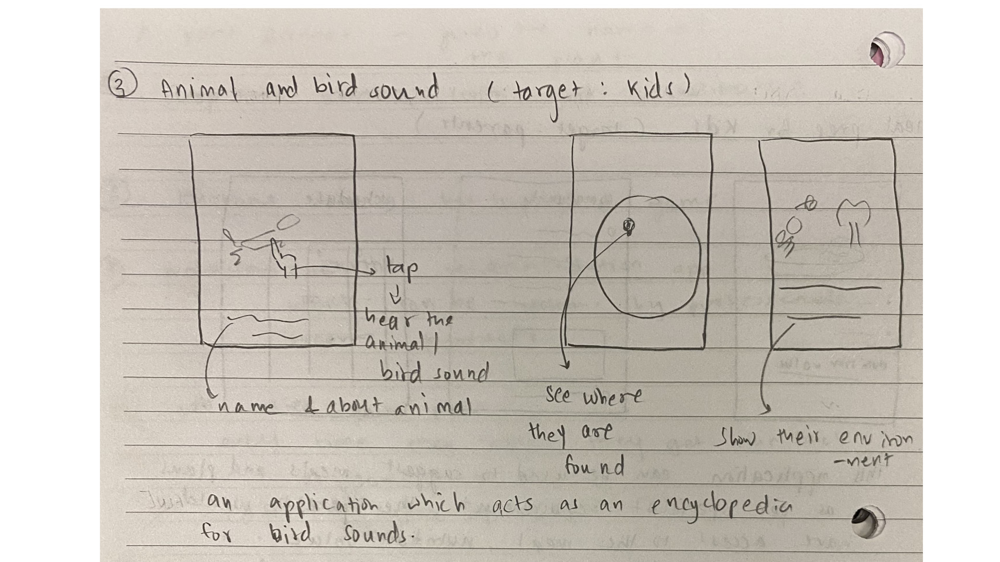
This idea also belongs to the (A) tier, this idea belonged to Heer. In this application, the user can view birds of different species from all around the world and see what they sound like.
They can also view fun facts and important information about the birds. Some of the pros of this application were that it was something new, and a lot more educational than some of our other ideas. But the idea itself was a bit limiting and there was not much room for creativity.
Databases Course Term Project ↓
Full stack development of a 3-tier architecure web application.
Tool for admitting and diagnosing patients remotely. I was in charge of the clerk functionality, shown below.
Technologies
- Front-End:
Vue.js, TailwindCSS
- Application & API:
Python Flask-Restful
- Database:
SQLite3

"""Sample Query using list comprehensions to build json with nested lists"""
# Get Patients and keys of all their forms. Null if no report of that kind exists
cursor.execute(
"SELECT p.P_SSN, n.Fname, n.Lname, n.Is_approved, m.TPAL_total \
FROM Patient as p \
LEFT JOIN New_Applicant_Form as n ON p.P_SSN=n.P_SSN \
LEFT JOIN Medical_History as m ON p.P_SSN=m.P_SSN \
ORDER BY n.Is_approved ASC ;")
forms = cursor.fetchall()
forms = [dict(f) for f in forms]
# Get all covid screens of each patient
for form in forms:
cursor.execute(
"SELECT Date FROM Covid_screen WHERE P_SSN = ?;", (form["P_SSN"],))
screens = cursor.fetchall()
form["dates"] = [f["Date"] for f in screens]
# Get all reports of each patient
for form in forms:
cursor.execute(
"SELECT Report_ID FROM Report WHERE P_SSN = ?;", (form["P_SSN"],))
reports = cursor.fetchall()
form["reports"] = [f["Report_ID"] for f in reports]